Cuidados com os fios
Lavagem, hidratação, quando começar o matizador e como evitar o amarelamento, o frizz e o ressecamento.
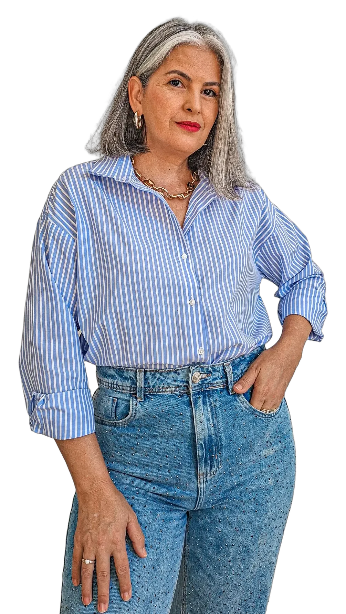
Cabelo grisalho, transição capilar e autoestima
Assumir os cabelos brancos é quebrar ciclos.
Escondi os fios brancos por 16 anos. Em 2020 parei de pintar e passei a mostrar cada fase, para que outras mulheres façam a transição com segurança.
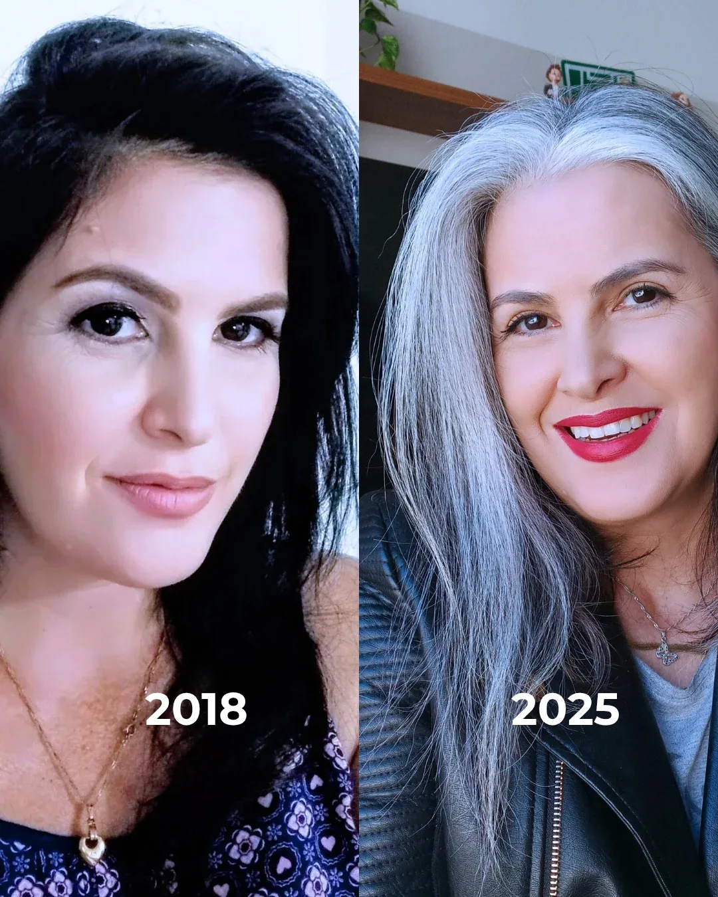
Minha transição
Os primeiros fios brancos. A resposta foi tinta, retoque atrás de retoque, por 16 anos, tentando caber no padrão.
A primeira transição veio na gravidez, por orientação médica: nada de coloração até a filha nascer. Depois, voltei a pintar.
A decisão de verdade. Parei de pintar e comecei a registrar cada fase no Instagram, com o frizz, o amarelamento e os dias de vontade de desistir.
Totalmente livre da coloração, com o chanel que marcou a nova fase. O vídeo passou de 1 milhão de visualizações.
Nasce o Beleza Platinada e, no YouTube, o Guia do Grisalho, hoje com 20 mil inscritas.
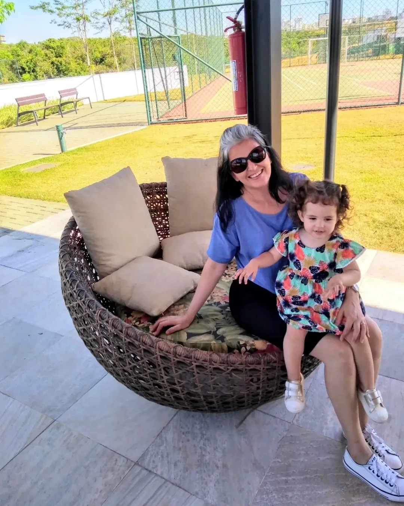
Que exemplo eu quero deixar para ela?
Assumir os cabelos grisalhos nunca foi só uma mudança de visual. Foi uma mudança de olhar: primeiro sobre mim, depois sobre a forma como eu quero ajudar outras mulheres.
Eu não queria que a minha filha crescesse achando que precisa esconder o cabelo natural para se sentir bonita.
Curso e comunidade
O método que eu queria ter tido em 2020: do primeiro centímetro de raiz aos fios 100% naturais, com cuidado, estilo e apoio para não desistir no meio.
Lavagem, hidratação, quando começar o matizador e como evitar o amarelamento, o frizz e o ressecamento.
Os produtos que funcionam no cabelo branco e grisalho, testados por mim, e os que vale deixar na prateleira.
Quando cortar, quanto cortar e qual corte valoriza o seu rosto, sem obrigação de ir direto para o curto.
Cores, maquiagem, lenços e acessórios que deixam a fase de transição bonita, e não só suportável.
Medo de parecer mais velha, comentários da família, o espelho estranho: o que fazer em cada fase.
Uma aula sobre alimentação para a saúde dos fios e um cardápio completo em PDF.
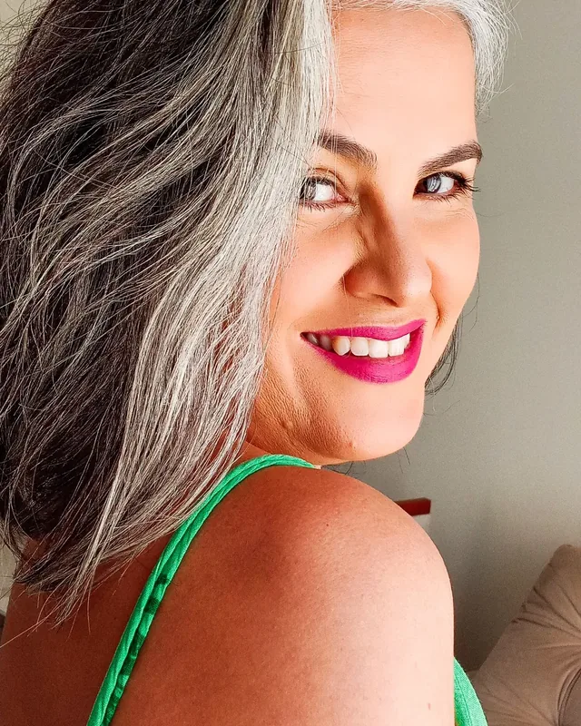
“Você não precisa passar por isso sozinha. Eu passei por cada fase e sei onde cada uma aperta.”
Gratuito no YouTube
Seis aulas, na ordem certa para quem está começando. Assista no canal, onde já são 20,5 mil inscritas e 2,7 milhões de visualizações.
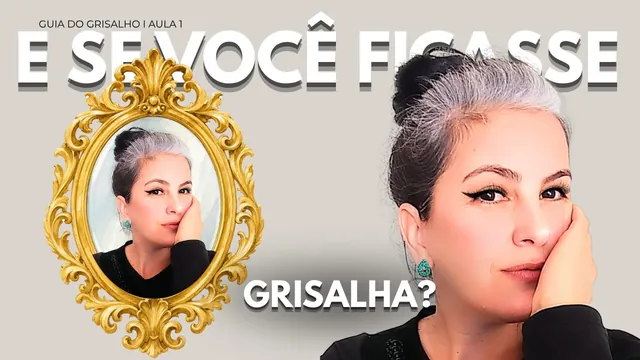
Aula 1O que ninguém te conta sobre a autoaceitação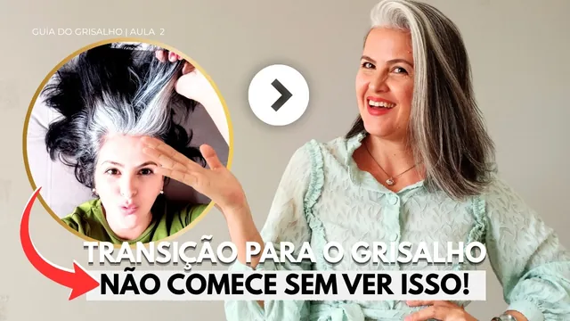
Aula 2O passo indispensável antes de iniciar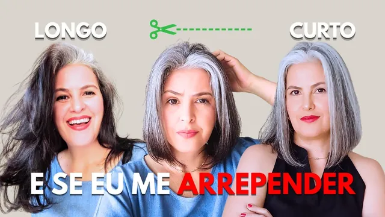
Aula 3Preciso cortar o cabelo curto?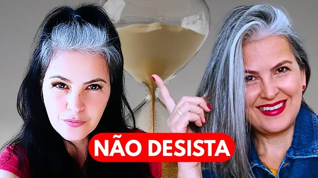
Aula 45 motivos para registrar a transição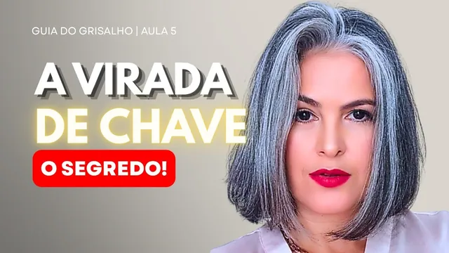
Aula 5O que o cabelo grisalho realmente precisa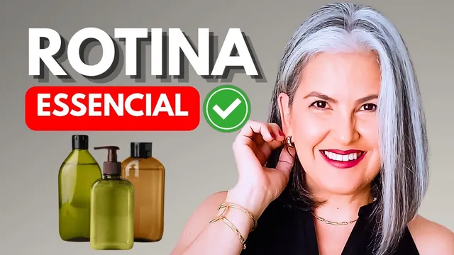
Aula 6Produtos para grisalho: veja isto antes de comprarOs mais vistos
Dicas curtas que viajaram longe. Toque no botão para ouvir.
Grisalho combina com tudo
Looks reais do dia a dia, do provador e dos eventos: o grisalho com cor, estampa e alfaiataria.
Para marcas
Publicidade para marcas de beleza, moda e cuidado capilar, trabalhos como modelo grisalha e participação em lives e eventos.
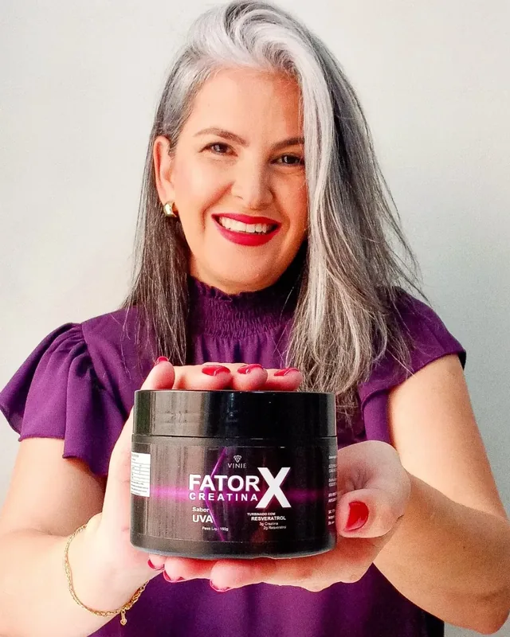
O público é de mulheres que estão assumindo os fios brancos ou pensando nisso: gente que pergunta, salva e compra o que funciona no cabelo grisalho.